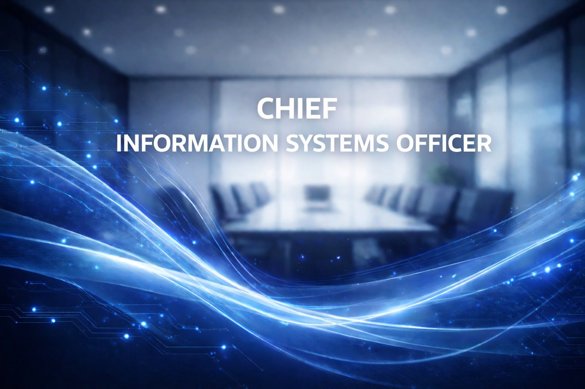

Strategic focus
Combines automation, observability, and defenders-in-depth so the platform can expand without sacrificing uptime.
- Zero-trust architecture
- Automation-first operations
- Partner-facing assurance programs
Digital Resilience
Chief Information Systems Officer
Guards KEPKOF's platforms with a zero-trust mindset, making sure every product and partner experience stays secure, reliable, and fast.

Combines automation, observability, and defenders-in-depth so the platform can expand without sacrificing uptime.
Modernized monitoring and compliance, trimming mean-time-to-resolve by 35% and keeping our data safe working with global partners.
Coaches engineers through blameless retros, invests in cloud-native capability, and keeps all teams accountable for uptime.
Built secure networks for regional operators before joining KEPKOF as systems engineer.
Led infrastructure modernization and compliance for the platform portfolio.
Named Chief Information Systems Officer to grow secure services across the company.
Balances security, performance, and developer productivity through transparent metrics, quick experiments, and documented guardrails.